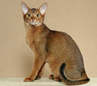

Tentang Kucing Avyssinian
Abyssinian terlihat seperti singa gunung kecil dengan wajah ekspresif yang ditandai secara dramatis dan mantel hangat yang menghasilkan warna-warni berkilauan baik saat diam maupun bergerak. Mereka atletis, waspada dan sangat aktif. Meskipun mereka berotot, gerakan mereka lincah, anggun, dan sangat cepat. Ciri-ciri kucing abyssinian adalah pola tabby(pola warna, biasanya garis-garis, kombinasi garis dan lingkaran, atau bahkan perpaduan bintik dan garis) khas mereka yang ditandai oleh mantel bulu yang halus dan kompleks. Dengan bulu pendek yang melekat pada kulit, kucing abyssinian memiliki warna lebih terang di seluruh tubuh mereka dan warna yang lebih gelap di sekitar ujung ekor mereka. Selain warna mereka yang unik, ciri-ciri kucing abyssinian disertai dengan telinga panjang mereka yang khas, wajah berbentuk segitiga dan mata almond. Tubuh mereka yang panjang dan ramping memberikan tampilan yang elegan dan anggun. Pola belang khas pada ciri-ciri kucing abyssinian diperkaya oleh rambut agouti, yang memberikan lapisan bulu dengan kedalaman warna dan kilau yang unik (The International Cat Association (TICA))